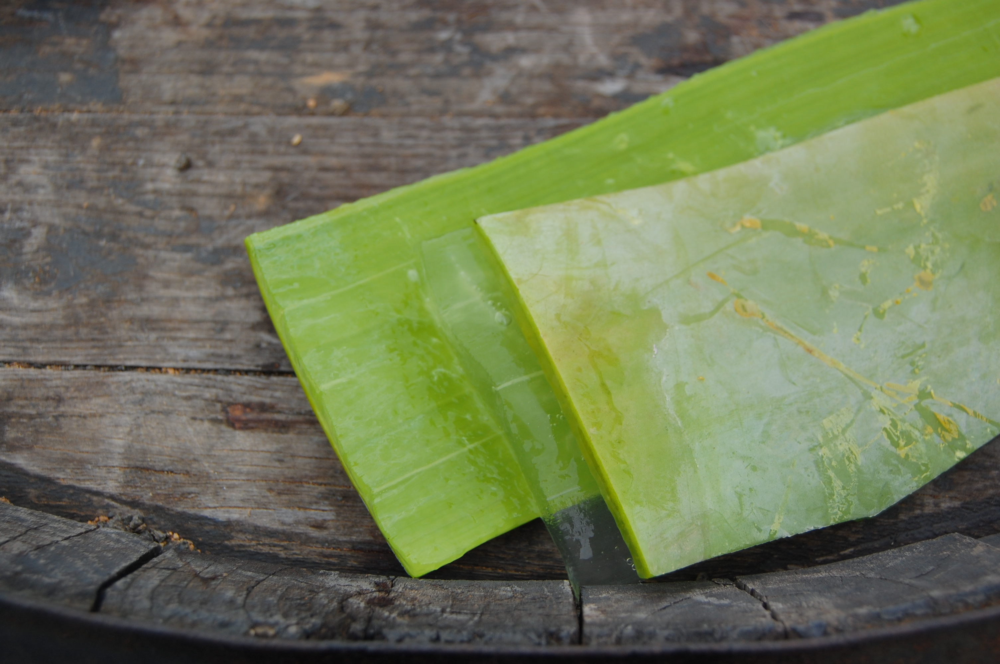
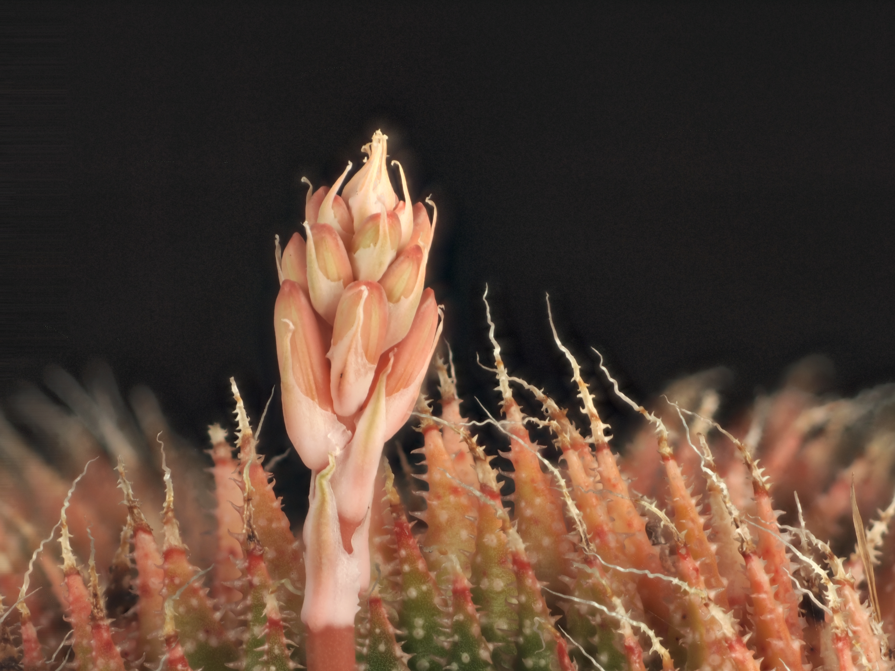
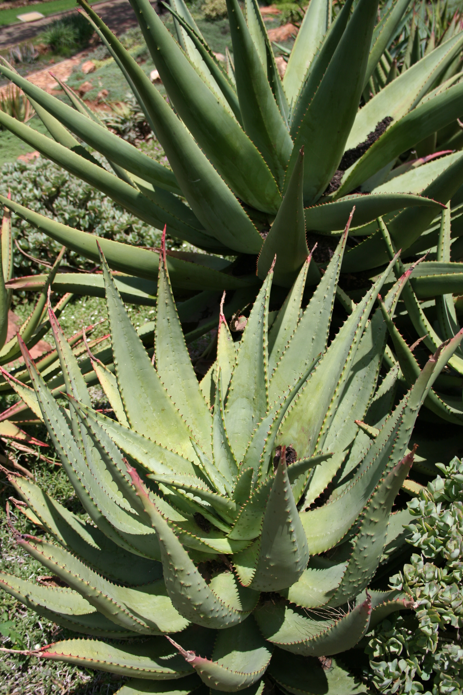
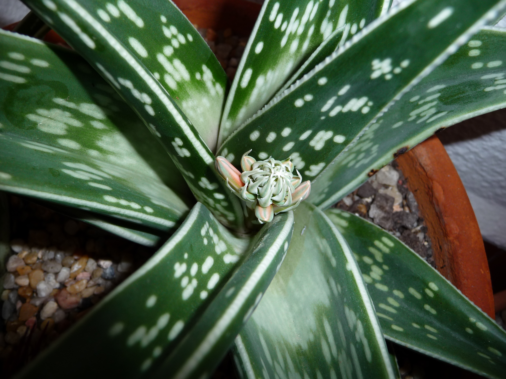
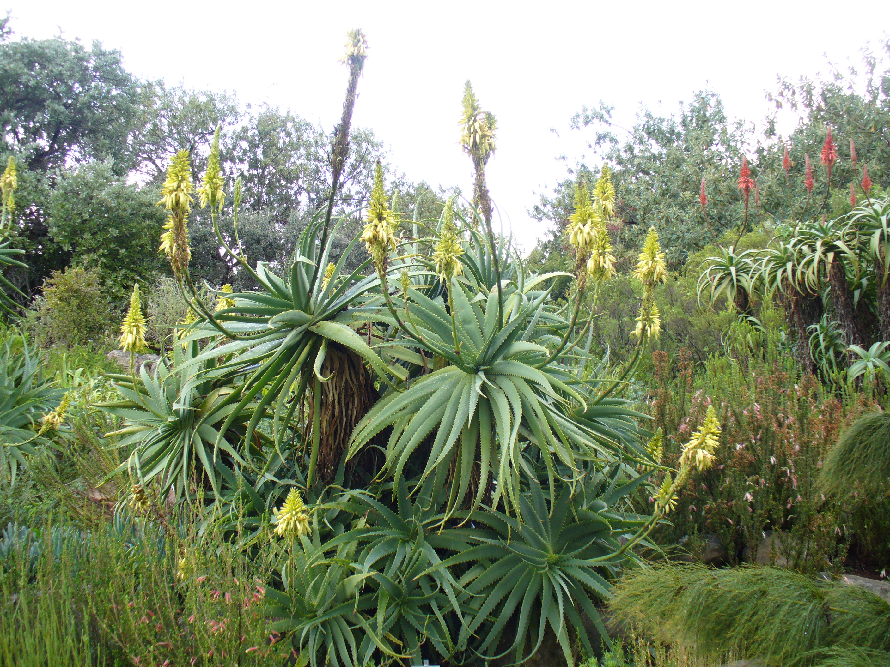
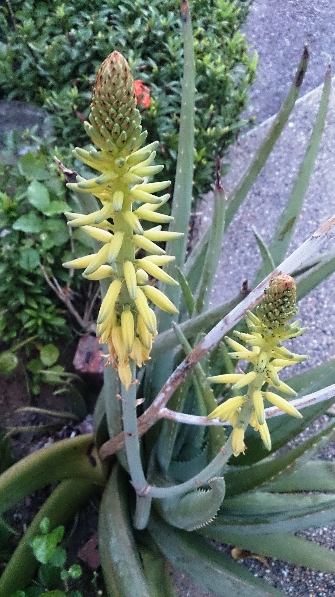

Aloes



💧'">
🌸'">
🏔️'">
⭐'">
🐯'">
🌺'">Rodzaje — zalety i wady każdej odmiany
Rodzaj Aloe liczy ponad 500 gatunków. Poniżej szczegółowe porównanie pięciu odmian dostępnych w Polsce — od leczniczych po dekoracyjne.
Aloes zwyczajny
Najlepiej przebadany gatunek — ponad 1 500 publikacji naukowych. Liście grube, mięsiste, tworzą rozetę przy ziemi, brzegi z twardymi beżowymi ząbkami. Miąższ przezroczysto-żółtawy, obfity. Zawiera ok. 99,5% wody + acemannan, witaminy i enzymy. Standard kosmetyczny i farmaceutyczny. Dorasta do 50–80 cm w doniczce. Produkuje kwiaty dopiero po kilku latach — żółtawo-pomarańczowe grono na długiej łodydze.
✅ Zalety
- Najlepiej przebadany naukowo ze wszystkich gatunków
- Obfity żel — grube liście dają dużo miąższu
- Standard kosmetyczny — certyfikat IASC, powszechnie dostępny
- Mały rozmiar — idealny do doniczki na parapecie (do 80 cm)
- Najwyższa zawartość acemannanu (immunostymulator)
- Bardzo łatwa uprawa — toleruje długie zaniedbanie
- Produkuje liczne odrosty-córki, które łatwo oddzielić
- Szeroko dostępny w każdym centrum ogrodniczym
- Najskuteczniejszy zewnętrznie: nawilżanie, oparzenia, trądzik
❌ Wady
- Wolno rośnie — 3–4 lata do pierwszego zbioru leczniczego
- Mniej antrakwinonów niż arborescens — słabsze działanie wewnętrzne
- Szeroka rozetka zajmuje dużo miejsca na parapecie
- Nie mrozoodporny — uszkodzenie przy temperaturach poniżej +5°C
- Płytki korzeń — łatwo się przewraca przy zbyt małej doniczce
- Komercyjne produkty „z aloesem" często zawierają go w śladowych ilościach
- Przy nadmiarze wody natychmiast gniją korzenie
Aloes drzewiaste
W Polsce zwany potocznie „aloesem babci". Popularny od lat 70. dzięki przepisowi franciszkanina ks. Józefa Klimuszki. Tworzy rozgałęziony pień — dorasta do 2 m w domu. Liście ciemniejsze, smuklejsze, z wyraźnymi ostrymi kolcami. Zawiera proporcjonalnie więcej antrakwinonów i polisacharydów niż vera. Kwitnie zimą — efektowne czerwone grona kwiatów. Badania japońskie (Fujita 1997–2002) potwierdzają potencjał antynowotworowy polisacharydów.
✅ Zalety
- Tradycja polska — kilkadziesiąt lat stosowania, receptura ks. Klimuszki
- Więcej antrakwinonów i polisacharydów → silniejsze działanie wewnętrzne
- Wykazane w badaniach działanie immunostymulujące i antynowotworowe
- Szybciej rośnie — imponująca roślina w kilka lat
- Rozgałęziony pień — można ciąć bez szkody dla rośliny
- Znosi krótkotrwałe mrozy do –3°C (można zimować na nieogrzewanym balkonie)
- Czerwone kwiaty zimą — dekoracyjna poza sezonem
- Odporniejszy na choroby i szkodniki niż vera
❌ Wady
- Dorasta dużo — po kilku latach potrzeba dużego pomieszczenia
- Smuklejsze liście = mniej żelu w liściu niż u Aloe vera
- Szybko wypełnia doniczkę — częste przesadzanie
- Kolce ostrzejsze i bardziej nieprzyjemne w obsłudze niż vera
- Trudniejszy do znalezienia — głównie specjalistyczne sklepy zielarskie
- Mniej publikacji naukowych niż vera (choć jest ich coraz więcej)
Aloes przylądkowy
Dziki, wielki gatunek z Przylądka Dobrej Nadziei (RPA) — w naturze dorasta do 3 m wysokości. W Polsce wyłącznie w szklarniach i ogrodach zimowych. Źródło farmaceutycznego lateksu aloesowego z aloiną — silnego środka przeczyszczającego stosowanego w preparatach na zaparcia. Piękne czerwone kwiaty przyciągają nektarem ptaki. Uprawiany przemysłowo w RPA, Lesotho i Zimbabwe. Nie nadaje się do domowego stosowania wewnętrznego bez nadzoru medycznego.
✅ Zalety
- Najwyższa zawartość antrakwinonów (aloiny) — silne działanie lecznicze
- Uprawa przemysłowa — sprawdzone źródło surowca farmaceutycznego
- Rośnie w ekstremalnie trudnych warunkach — susza, biedna gleba
- Imponujące rozmiary — efektowna roślina w ogrodzie zimowym
- Piękne czerwone kwiaty — wysoki walor dekoracyjny
- Długowieczny — w naturze dożywa kilkudziesięciu lat
❌ Wady
- Za duży do uprawy domowej — wymaga ogrodu zimowego lub szklarni
- Lateks z aloiną silnie toksyczny przy nadużyciu (uszkodzenie jelit, nerek)
- Nie do stosowania wewnętrznego bez nadzoru lekarskiego
- Nie mrozoodporny — wymaga ochrony przy pierwszych mrozach
- Praktycznie niedostępny w polskich sklepach (tylko kolekcjonerzy)
- Wąskie zastosowanie — głównie jako środek przeczyszczający
Aloe aristata — „koronkowy"
Miniaturowy, zagęszczony aloes bez wyraźnego pnia — dorasta do zaledwie 20–30 cm. Liście ciemnozielone, pokryte białymi brodawkami i miękkimi kolcami. Wyjątkowo łatwy w uprawie i mrozoodporny do –7°C — jedyny aloes, który w łagodniejszych polskich zimach może pozostać na zewnątrz pod dachem. Kwitnie na pomarańczowo. Nadaje się nawet na zaciemnione parapety (toleruje półcień).
✅ Zalety
- Mrozoodporny do –7°C — unikalny wśród aloesów
- Miniaturowy — idealny na mały parapet lub biurko
- Dekoracyjna forma — białe brodawki, „koronkowy" wygląd
- Miękkie kolce — bezpieczny przy dzieciach i zwierzętach
- Toleruje półcień — można ustawić dalej od okna
- Bardzo wolny wzrost — rzadko wymaga przesadzania
- Pomarańczowe kwiaty latem — ciekawa ozdoba
❌ Wady
- Brak znaczących właściwości leczniczych — zbyt mało przebadany
- Minimalny żel — miniaturowe liście, nie do użytku zielarskiego
- Wrażliwy na nadmierne podlewanie — mały korzeń, łatwo gnije
- Trudniejszy do znalezienia niż vera
Aloe variegata — „tygrysowy"
Kompaktowy aloes do 30–40 cm, rozpoznawalny dzięki charakterystycznym białym paseczkom (pstrym plamom) na ciemnozielonych liściach — stąd nazwa „tygrysowy". Pochodzi z suchych obszarów Republiki Południowej Afryki. Liście ułożone spiralnie w trzech rzędach, trójkątne w przekroju. Kwitnie różowo-pomarańczowo. Mniej wymagający od vera w kwestii słońca — dobrze znosi wschodnie i zachodnie wystawy. Dekoracyjna roślina okienna bez większego zastosowania leczniczego.
✅ Zalety
- Bardzo dekoracyjny — unikalne białe pasy, efektowna forma
- Kompaktowy — nie przerośnie parapetu
- Toleruje mniejsze nasłonecznienie niż vera i arborescens
- Spiralne liście — ciekawy wzór geometryczny
- Różowo-pomarańczowe kwiaty — długi okres kwitnienia
- Łatwa uprawa, nie wymaga specjalnych zabiegów
❌ Wady
- Brak praktycznego znaczenia leczniczego — zbyt mało miąższu
- Liście wąskie — praktycznie brak żelu do pozyskania
- Nie toleruje temperatur poniżej 10°C — wrażliwszy niż vera
- Wolny wzrost — trudno rozmnożyć (mało odrostów)
- Wyższa cena niż vera przy braku zalet leczniczych
Skład — aktywne związki
Na co pomaga — zastosowania
🌿 Zewnętrzne (na skórę)
- Oparzenia — słoneczne i 1°/2° termiczne; chłodzi, przyspiesza gojenie, zmniejsza bliznowacenie
- Rany, skaleczenia — tworzy warstwę ochronną, działa antybakteryjnie
- Trądzik — reguluje sebum, zabija P. acnes, zmniejsza stany zapalne
- Egzema, łuszczyca, AZS — łagodzi swędzenie, regeneruje barierę naskórka
- Opryszczka (herpes) — aloina i acemannan hamują replikację wirusa HSV-1
- Nawilżanie skóry — tworzy film higroskopijny bez tłustości; idealne na twarz
- Rozstępy, blizny — stymuluje fibroblasty do produkcji kolagenu
- Hemoroidy — żel zewnętrznie zmniejsza obrzęk i ból
- Pielęgnacja jamy ustnej — żel na afty i zapalenie dziąseł
- Ukąszenia owadów — szybka ulga, chłodząco-łagodząco
💜 Wewnętrzne (do picia)
- Wrzody żołądka, refluks, IBS — acemannan powleka śluzówkę, zmniejsza stan zapalny (sok z Aloe vera)
- Zaparcia — lateks z aloiny (silne, krótkotrwałe; uwaga: nie dłużej niż 7 dni)
- Cukrzyca typu 2 — poprawia wrażliwość na insulinę i obniża glikemię na czczo (badania kliniczne)
- Cholesterol — obniża LDL, trójglicerydy; podnosi HDL
- Odporność — acemannan aktywuje układ immunologiczny (makrofagi, NK)
- Detoksykacja — wspomaga wątrobę; stara receptura ks. Klimuszki
- Stany zapalne jelit — UC, Crohn (pomocniczo; nie zastępuje leczenia)
- Łagodne działanie antyoksydacyjne — ochrona komórek przed stresem oksydacyjnym
Uprawa w domu — jak pielęgnować?
Aloes to roślina pustynna — preferuje niedostatek wody i dużo słońca. Łatwa w uprawie nawet dla nowicjuszy.
| Warunek | Aloe vera | Aloe arborescens |
|---|---|---|
| Nasłonecznienie | Pełne słońce, parapet S/W | Pełne słońce lub półcień |
| Podlewanie (lato) | Co 2–3 tygodnie — gdy ziemia sucha 5 cm w dół | Co 1–2 tygodnie |
| Podlewanie (zima) | Co 5–8 tygodni (spoczynek) | Co 4–6 tygodni |
| Temperatura | +5°C do +35°C; nie mrozoodporny | Znosi do –3°C krótkotrwale |
| Podłoże | Kaktusowe + 30% perlitu/piasku | Ziemia ogrodowa + piasek (1:1) |
| Nawożenie | Raz w miesiącu (V–VIII), połowa dawki | Raz na 6 tygodni |
| Przesadzanie | Co 2 lata, wiosną | Co 2–3 lata, gdy wypełni garnek |
| Rozmnażanie | Odrosty boczne (córki) | Sadzonki łodygowe lub odrosty |
Jak przygotować żel z liścia?
- Odetnij dolny liść przy samej łodydze nożem. Odczekaj 10–15 minut — żółty lateks sam wycieknie (wyrzuć go lub zetrzeć). Można też opłukać liść wodą.
- Umyj liść. Odetnij boki z kolcami (możesz skroić obieraczką do warzyw).
- Rozetnij liść wzdłuż płasko. Łyżką lub nożem wyskrob przezroczysty żel.
- Użyj bezpośrednio na skórę lub zblenduj na gładką masę i przechowuj w lodówce do 5–7 dni.
- Do dłuższego przechowywania dodaj kilka kropel witaminy E lub soku z cytryny jako naturalne konserwanty (do 2 tygodni).
Przepisy i zastosowania
🔥 Żel na oparzenia słoneczne — pierwsza pomoc
- Umyj świeży liść, poczekaj aż lateks wycieknie, wyskrob żel.
- Nałóż grubą warstwę bezpośrednio na poparzone miejsce i delikatnie rozetrzyj.
- Nie nakrywaj — żel musi parować (chłodząca). Powtarzaj co 2–4 godz.
- Możesz wzmocnić efekt mieszając 1:1 z wodą różaną lub sokiem z ogórka.
💆 Maseczka nawilżająca na twarz (dla suchej i tłustej skóry)
- Dla suchej skóry: wymieszaj 2 łyżki żelu + 1 łyżeczka olejku arganowego lub różanego + kilka kropli soku z cytryny.
- Dla tłustej/trądzikowej: żel + kilka kropli olejku z drzewa herbacianego + łyżeczka miodu manuka.
- Nałóż na oczyszczoną twarz, omiń okolice oczu. Trzymaj 15–20 min.
- Zmyj letnią wodą. Skóra będzie nawilżona i matowa — bez tłustości.
🫙 Mikstura ks. Klimuszki — tradycyjna receptura polska
Tradycyjny środek wzmacniający odporność i wspomagający detoksykację. Spopularyzowany przez o. Józefa Klimuszkę, franciszkanina i zielarza (1905–1980).
- Zetrzyj z liści Aloe arborescens (muszą mieć min. 3 lata, liście dolne) kolce. Nie myj — woda niszczy aktywne substancje. Użyj liści prosto z rośliny.
- Zblenduj liście na papkę. Dodaj 500 g miodu naturalnego (lipowego lub gryczanego) i 100 ml czystej wódki lub koniaku.
- Całość wymieszaj dokładnie. Przełóż do ciemnego słoika. Szczelnie zamknij.
- Przechowuj w lodówce przez 5–10 dni przed pierwszym użyciem (dojrzewanie).
- Dawkowanie: 1 łyżeczka 3× dziennie, na 30 min przed posiłkiem. Kuracja: 1–3 miesiące.
🍹 Sok aloesowy na trawienie i odporność (do picia)
- Wyskrob żel z dużego liścia (ok. 3–4 łyżki). Upewnij się, że nie ma żółtego lateksu.
- Zblenduj żel z 200 ml wody kokosowej lub soku jabłkowego (maskuje lekką gorycz).
- Dodaj opcjonalnie: 1 łyżeczkę miodu, kilka liści mięty lub plasterek imbiru.
- Pij 30 ml (2 łyżki) rano na czczo. Nie przekraczaj 60 ml dziennie.
- Kuracja: 4–6 tygodni, potem 2-tygodniowa przerwa.
💊 Żel na trądzik i zmiany skórne — leczniczy żel do twarzy
- Do 3 łyżek świeżego żelu dodaj 5 kropli olejku z drzewa herbacianego + 3 krople olejku lawendowego.
- Wymieszaj w słoiczku. Przechowuj w lodówce do 7 dni.
- Wieczorem, po oczyszczeniu twarzy, nałóż cienką warstwę na całą twarz lub miejscowo na wykwity.
- Zostaw na noc. Rano spłucz letnią wodą.
Przeciwwskazania i środki ostrożności
- Ciąża i karmienie piersią — aloina pobudza skurcze macicy i może przechodzić do mleka
- Dzieci poniżej 12. roku życia — wewnętrznie bez konsultacji z pediatrą
- Choroby nerek — antrakwinoidy obciążają nerki przy długotrwałym stosowaniu
- Hemoroidy, stany zapalne jelit — lateks z aloiną nasilają podrażnienie (żel bez lateksu jest bezpieczny zewnętrznie)
- Leki moczopędne i glikozdy nasercowe — aloina obniża poziom potasu → ryzyko interakcji z digoksyną i diuretykami
Porównanie gatunków — tabela
| Cecha | Aloe vera | Aloe arborescens | Aloe ferox |
|---|---|---|---|
| Żel (miąższ) | ⭐⭐⭐⭐⭐ (obfity) | ⭐⭐⭐ (mniej, ale bogatszy) | ⭐⭐ (mało) |
| Antrakwinoidy | ⭐⭐ | ⭐⭐⭐⭐ | ⭐⭐⭐⭐⭐ |
| Acemannan | ⭐⭐⭐⭐⭐ | ⭐⭐⭐⭐ | ⭐⭐⭐ |
| Zastosowanie zewnętrzne | ⭐⭐⭐⭐⭐ | ⭐⭐⭐⭐ | ⭐⭐⭐ |
| Zastosowanie wewnętrzne | ⭐⭐⭐⭐ | ⭐⭐⭐⭐⭐ | ⚠ tylko lateks |
| Uprawa w domu | Bardzo łatwa | Łatwa | Trudna (duża) |
| Mrozoodporność | Brak | Do –3°C krótko | Brak |
| Popularność w Polsce | ★★★★★ | ★★★★☆ | ★★☆☆☆ |
Ciekawostki
- Aloes vera był znany już w starożytnym Egipcie — hieroglify pokazują go jako „roślinę nieśmiertelności". Kleopatra miała używać żelu aloesowego do pielęgnacji cery.
- NASA wymienia Aloe vera w badaniach nad oczyszczaniem powietrza — pochłania formaldehyd i benzen z powietrza w zamkniętych pomieszczeniach.
- Żel aloesowy ma strukturę podobną do kolagenu — stąd jego zdolność do „wypełniania" drobnych zmarszczek i poprawy sprężystości skóry.
- W ciągu jednej nocy aloes może wytworzyć nową warstwę żelu w pociętym liściu — jeden z szybszych procesów regeneracyjnych w świecie roślin.
- Polska tradycja lecznicza z aloesem jest związana z franciszkańskim zielarstwem. Ks. Klimuszko (Ojciec Czesław) spopularyzował aloes arborescens w Polsce w latach 60. i 70. jako środek immunostymulujący i wspomagający terapię raka.
- W Japonii przeprowadzono największe badanie kliniczne nad Aloe arborescens — wyniki sugerują, że acemannan i polisacharydy wspomagają terapię onkologiczną (badanie Fujity, 1997–2002).